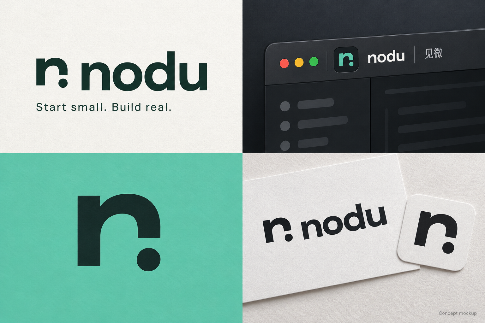

品牌配色蓝色已确定为正式主色。
见微，向动手迈一步。Start small.
Build real.
Build real.
起点 · 主标识蓝色 · 正式主色
从第一行代码，
开始做硬件。
Nodu/ˈnoʊduː/四个字母，一次开始。
取意于 Node 与 Do。连接代码与硬件，也把想法变成第一次动手。中文仍是「见微」，英文统一使用 Nodu，标识使用小写 nodu。


蓝色，作为新的起点。
蓝色是 Nodu 的正式主色。暖橙与紫色保留为对照，点击可查看同一枚标识的不同表现。

当前显示：蓝色 · 正式主色。 暖橙与紫色仅供对照。
六种起笔，
同一个动手的念头。
从字母、积木到连接，探索六种独立的图形语言。
选一个方向，放大看看它。
起点字母与光点
以小写 n 为骨架，一枚独立圆点落在右下方。像第一次点亮的 LED，也像一次动手得到的结果；厚实而开放的轮廓，让工具显得亲近、可上手。

放进工具里，
也认得出来。
从桌面上的一个图标，到编辑器中的一处签名。
主标识在大小、深浅之间保持同一个性格。
小到一个图标
主标识按实际像素显示。
16 px
24 px
32 px
64 px
工作台配色
正式蓝色搭配石墨与暖白；色值随当前展示同步。
石墨
#181D20蓝色
#4F7CFF暖白
#F3F3EE深色文字
#244BB0


初版青绿应用概念展开查看历史方案



一个轻一点的名字，
留给更广的硬件世界。
Nodu 是面向初学者的嵌入式开发工具。名字不绑定某一颗芯片，先让编辑、保存和理解代码变得清楚，再逐步连接真实硬件。
看见微小，做出真实。
名字向前，能力如实。
- 当前可用
- 文件编辑、保存、本机终端、合成演示基于 Theia / Electron 的桌面工作台。
- 首个接入目标
- K210硬件连接与运行流程仍在接入计划中。
- 后续拓展
- STM32F103C8T6 · ESP32-C3 / S3跨芯片的项目体验是拓展方向。
- 项目协作
- 搭芯 / DACIR作为未来项目协作方向，目前尚未集成。